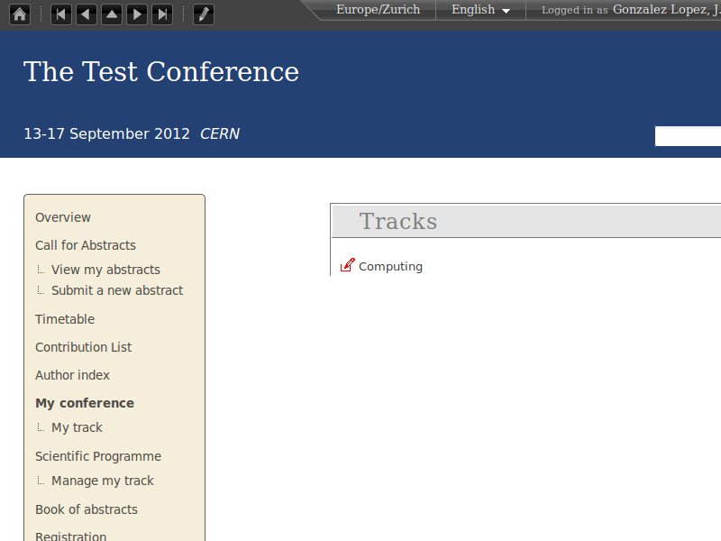
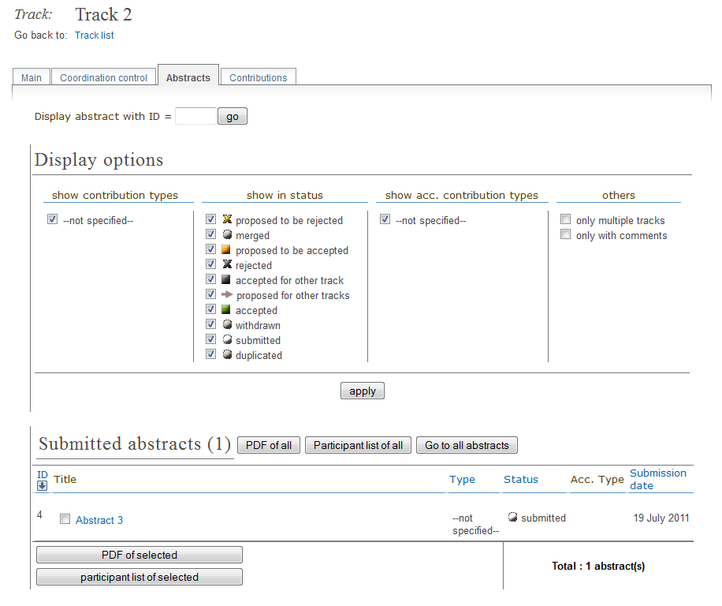

Chapter 1. Track Co-ordinator’s Guide¶
1.1. Track Co-ordinator¶
As a Track Co-ordinator you are able to propose the acceptance or rejection of abstracts within your track. Your are given the Track Co-ordinator’s access by the Conference Manager.

You can access your tracks by selecting My tracks or Manage my tracks from the conference homepage menu under My conference or Scientific Programme. This will take you to the list of tracks you are co-ordinating or straight into your track if you co-ordinate only one track.

1.2. Track Co-ordinating¶
Once in the My tracks area you can click on the small red pen to the left of the track name to access the co-ordination area of that track.
1.2.1. Abstracts Tab¶
The Abstracts tab lists all the abstracts that have been submitted for your track and their status.

If you click on an abstract’s name you will be taken to the Abstract’s Management area. From here you can view the abstract’s details and propose whether you want to accept, reject, mark as duplicated, or suggest the abstract for another track.

1.2.2. Internal Comments Tab¶
The Internal comments tab allows you to view and add any comments attached to the abstract.